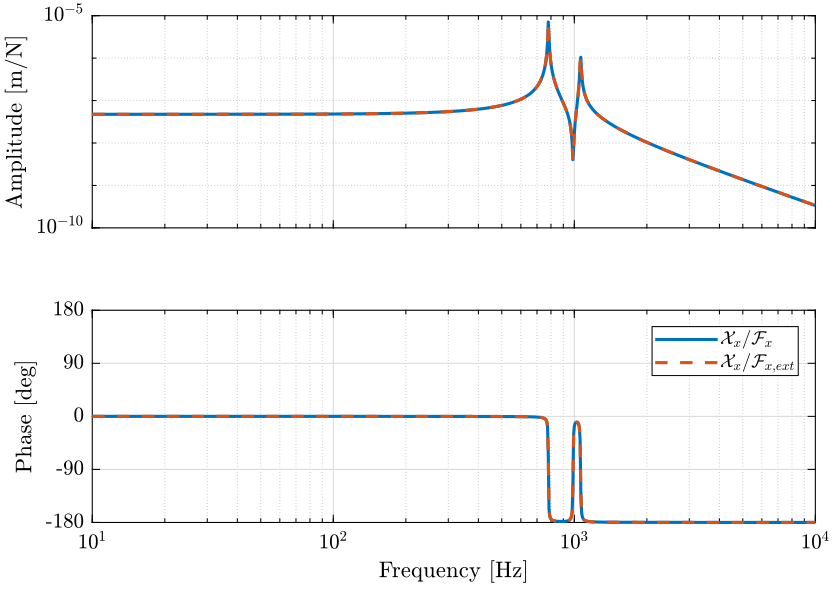
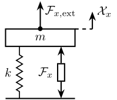
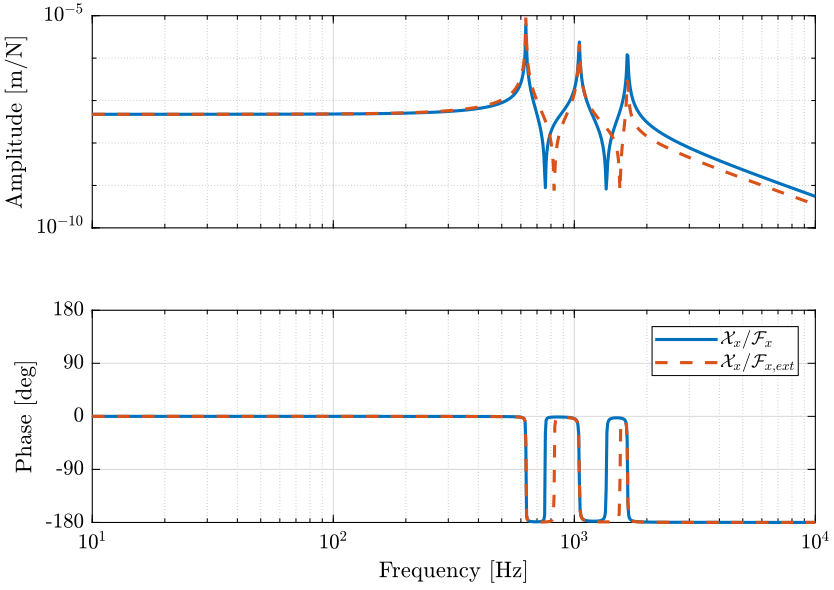
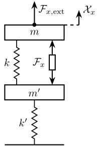

Stewart Platform - Dynamics Study
Table of Contents
1 Compare external forces and forces applied by the actuators
In this section, we wish to compare the effect of forces/torques applied by the actuators with the effect of external forces/torques on the displacement of the mobile platform.
1.1 Comparison with fixed support
Let’s generate a Stewart platform.
stewart = initializeStewartPlatform(); stewart = initializeFramesPositions(stewart, 'H', 90e-3, 'MO_B', 45e-3); stewart = generateGeneralConfiguration(stewart); stewart = computeJointsPose(stewart); stewart = initializeStrutDynamics(stewart); stewart = initializeJointDynamics(stewart, 'type_F', 'universal_p', 'type_M', 'spherical_p'); stewart = initializeCylindricalPlatforms(stewart); stewart = initializeCylindricalStruts(stewart); stewart = computeJacobian(stewart); stewart = initializeStewartPose(stewart); stewart = initializeInertialSensor(stewart, 'type', 'none');
We don’t put any flexibility below the Stewart platform such that its base is fixed to an inertial frame. We also don’t put any payload on top of the Stewart platform.
ground = initializeGround('type', 'none');
payload = initializePayload('type', 'none');
controller = initializeController('type', 'open-loop');
The transfer function from actuator forces \(\bm{\tau}\) to the relative displacement of the mobile platform \(\mathcal{\bm{X}}\) is extracted.
%% Options for Linearized
options = linearizeOptions;
options.SampleTime = 0;
%% Name of the Simulink File
mdl = 'stewart_platform_model';
%% Input/Output definition
clear io; io_i = 1;
io(io_i) = linio([mdl, '/Controller'], 1, 'openinput'); io_i = io_i + 1; % Actuator Force Inputs [N]
io(io_i) = linio([mdl, '/Relative Motion Sensor'], 1, 'openoutput'); io_i = io_i + 1; % Position/Orientation of {B} w.r.t. {A}
%% Run the linearization
G = linearize(mdl, io, options);
G.InputName = {'F1', 'F2', 'F3', 'F4', 'F5', 'F6'};
G.OutputName = {'Edx', 'Edy', 'Edz', 'Erx', 'Ery', 'Erz'};
Using the Jacobian matrix, we compute the transfer function from force/torques applied by the actuators on the frame \(\{B\}\) fixed to the mobile platform:
Gc = minreal(G*inv(stewart.kinematics.J'));
Gc.InputName = {'Fnx', 'Fny', 'Fnz', 'Mnx', 'Mny', 'Mnz'};
We also extract the transfer function from external forces \(\bm{\mathcal{F}}_{\text{ext}}\) on the frame \(\{B\}\) fixed to the mobile platform to the relative displacement \(\mathcal{\bm{X}}\) of \(\{B\}\) with respect to frame \(\{A\}\):
%% Input/Output definition
clear io; io_i = 1;
io(io_i) = linio([mdl, '/Disturbances'], 1, 'openinput', [], 'F_ext'); io_i = io_i + 1; % External forces/torques applied on {B}
io(io_i) = linio([mdl, '/Relative Motion Sensor'], 1, 'openoutput'); io_i = io_i + 1; % Position/Orientation of {B} w.r.t. {A}
%% Run the linearization
Gd = linearize(mdl, io, options);
Gd.InputName = {'Fex', 'Fey', 'Fez', 'Mex', 'Mey', 'Mez'};
Gd.OutputName = {'Edx', 'Edy', 'Edz', 'Erx', 'Ery', 'Erz'};
The comparison of the two transfer functions is shown in Figure 1.

Figure 1: Comparison of the transfer functions from \(\bm{\mathcal{F}}\) to \(\mathcal{\bm{X}}\) and from \(\bm{\mathcal{F}}_{\text{ext}}\) to \(\mathcal{\bm{X}}\) (png, pdf)
{kind=link}
This can be understood from figure 2 where \(\mathcal{F}_{x}\) and \(\mathcal{F}_{x,\text{ext}}\) have clearly the same effect on \(\mathcal{X}_{x}\).

Figure 2: Schematic representation of the stewart platform on a rigid support
1.2 Comparison with a flexible support
We now add a flexible support under the Stewart platform.
ground = initializeGround('type', 'flexible');
And we perform again the identification.
%% Input/Output definition
clear io; io_i = 1;
io(io_i) = linio([mdl, '/Controller'], 1, 'openinput'); io_i = io_i + 1; % Actuator Force Inputs [N]
io(io_i) = linio([mdl, '/Relative Motion Sensor'], 1, 'openoutput'); io_i = io_i + 1; % Position/Orientation of {B} w.r.t. {A}
%% Run the linearization
G = linearize(mdl, io, options);
G.InputName = {'F1', 'F2', 'F3', 'F4', 'F5', 'F6'};
G.OutputName = {'Edx', 'Edy', 'Edz', 'Erx', 'Ery', 'Erz'};
Gc = minreal(G*inv(stewart.kinematics.J'));
Gc.InputName = {'Fnx', 'Fny', 'Fnz', 'Mnx', 'Mny', 'Mnz'};
%% Input/Output definition
clear io; io_i = 1;
io(io_i) = linio([mdl, '/Disturbances'], 1, 'openinput', [], 'F_ext'); io_i = io_i + 1; % External forces/torques applied on {B}
io(io_i) = linio([mdl, '/Relative Motion Sensor'], 1, 'openoutput'); io_i = io_i + 1; % Position/Orientation of {B} w.r.t. {A}
%% Run the linearization
Gd = linearize(mdl, io, options);
Gd.InputName = {'Fex', 'Fey', 'Fez', 'Mex', 'Mey', 'Mez'};
Gd.OutputName = {'Edx', 'Edy', 'Edz', 'Erx', 'Ery', 'Erz'};
The comparison between the obtained transfer functions is shown in Figure 3.

Figure 3: Comparison of the transfer functions from \(\bm{\mathcal{F}}\) to \(\mathcal{\bm{X}}\) and from \(\bm{\mathcal{F}}_{\text{ext}}\) to \(\mathcal{\bm{X}}\) (png, pdf)
{kind=link}
The addition of a flexible support can be schematically represented in Figure 4. We see that \(\mathcal{F}_{x}\) applies a force both on \(m\) and \(m^{\prime}\) whereas \(\mathcal{F}_{x,\text{ext}}\) only applies a force on \(m\). And thus \(\mathcal{F}_{x}\) and \(\mathcal{F}_{x,\text{ext}}\) have clearly not the same effect on \(\mathcal{X}_{x}\).

Figure 4: Schematic representation of the stewart platform on top of a flexible support
1.3 Conclusion
The transfer function from forces/torques applied by the actuators on the payload \(\bm{\mathcal{F}} = \bm{J}^T \bm{\tau}\) to the pose of the mobile platform \(\bm{\mathcal{X}}\) is the same as the transfer function from external forces/torques to \(\bm{\mathcal{X}}\) as long as the Stewart platform’s base is fixed.
2 Comparison of the static transfer function and the Compliance matrix
In this section, we see how the Compliance matrix of the Stewart platform is linked to the static relation between \(\mathcal{\bm{F}}\) to \(\mathcal{\bm{X}}\).
2.1 Analysis
Initialization of the Stewart platform.
stewart = initializeStewartPlatform(); stewart = initializeFramesPositions(stewart, 'H', 90e-3, 'MO_B', 45e-3); stewart = generateGeneralConfiguration(stewart); stewart = computeJointsPose(stewart); stewart = initializeStrutDynamics(stewart); stewart = initializeJointDynamics(stewart, 'type_F', 'universal_p', 'type_M', 'spherical_p'); stewart = initializeCylindricalPlatforms(stewart); stewart = initializeCylindricalStruts(stewart); stewart = computeJacobian(stewart); stewart = initializeStewartPose(stewart); stewart = initializeInertialSensor(stewart, 'type', 'none');
No flexibility below the Stewart platform and no payload.
ground = initializeGround('type', 'none');
payload = initializePayload('type', 'none');
controller = initializeController('type', 'open-loop');
Estimation of the transfer function from \(\mathcal{\bm{F}}\) to \(\mathcal{\bm{X}}\):
%% Options for Linearized
options = linearizeOptions;
options.SampleTime = 0;
%% Name of the Simulink File
mdl = 'stewart_platform_model';
%% Input/Output definition
clear io; io_i = 1;
io(io_i) = linio([mdl, '/Controller'], 1, 'openinput'); io_i = io_i + 1; % Actuator Force Inputs [N]
io(io_i) = linio([mdl, '/Relative Motion Sensor'], 1, 'openoutput'); io_i = io_i + 1; % Position/Orientation of {B} w.r.t. {A}
%% Run the linearization
G = linearize(mdl, io, options);
G.InputName = {'F1', 'F2', 'F3', 'F4', 'F5', 'F6'};
G.OutputName = {'Edx', 'Edy', 'Edz', 'Erx', 'Ery', 'Erz'};
Gc = minreal(G*inv(stewart.kinematics.J'));
Gc.InputName = {'Fnx', 'Fny', 'Fnz', 'Mnx', 'Mny', 'Mnz'};
Let’s first look at the low frequency transfer function matrix from \(\mathcal{\bm{F}}\) to \(\mathcal{\bm{X}}\).
| 4.7e-08 | -7.2e-19 | 5.0e-18 | -8.9e-18 | 3.2e-07 | 9.9e-18 |
| 4.7e-18 | 4.7e-08 | -5.7e-18 | -3.2e-07 | -1.6e-17 | -1.7e-17 |
| 3.3e-18 | -6.3e-18 | 2.1e-08 | 4.4e-17 | 6.6e-18 | 7.4e-18 |
| -3.2e-17 | -3.2e-07 | 6.2e-18 | 5.2e-06 | -3.5e-16 | 6.3e-17 |
| 3.2e-07 | 2.7e-17 | 4.8e-17 | -4.5e-16 | 5.2e-06 | -1.2e-19 |
| 4.0e-17 | -9.5e-17 | 8.4e-18 | 4.3e-16 | 5.8e-16 | 1.7e-06 |
And now at the Compliance matrix.
| 4.7e-08 | -2.0e-24 | 7.4e-25 | 5.9e-23 | 3.2e-07 | 5.9e-24 |
| -7.1e-25 | 4.7e-08 | 2.9e-25 | -3.2e-07 | -5.4e-24 | -3.3e-23 |
| 7.9e-26 | -6.4e-25 | 2.1e-08 | 1.9e-23 | 5.3e-25 | -6.5e-40 |
| 1.4e-23 | -3.2e-07 | 1.3e-23 | 5.2e-06 | 4.9e-22 | -3.8e-24 |
| 3.2e-07 | 7.6e-24 | 1.2e-23 | 6.9e-22 | 5.2e-06 | -2.6e-22 |
| 7.3e-24 | -3.2e-23 | -1.6e-39 | 9.9e-23 | -3.3e-22 | 1.7e-06 |
2.2 Conclusion
The low frequency transfer function matrix from \(\mathcal{\bm{F}}\) to \(\mathcal{\bm{X}}\) corresponds to the compliance matrix of the Stewart platform.